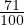
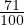

Näiteks 0,71 =  ja 0,4 =
 .
.Kui kümnendmurrul on täisosa, siis jääb see ka harilikus murrus täisosaks.
Näiteks 2,5 = 2
 .
.
Kümnendmurdu saab esitada hariliku murruna. Selleks kirjutame hariliku
murru lugejaks kümnendmurru murdosa ja nimetajaks ühe millele järgneb murdosas
olevate numbrite arv nulle.
Näiteks 0,71 =  ja 0,4 = .
Kui kümnendmurrul on täisosa, siis jääb see ka harilikus murrus täisosaks.
Näiteks 2,5 = 2.